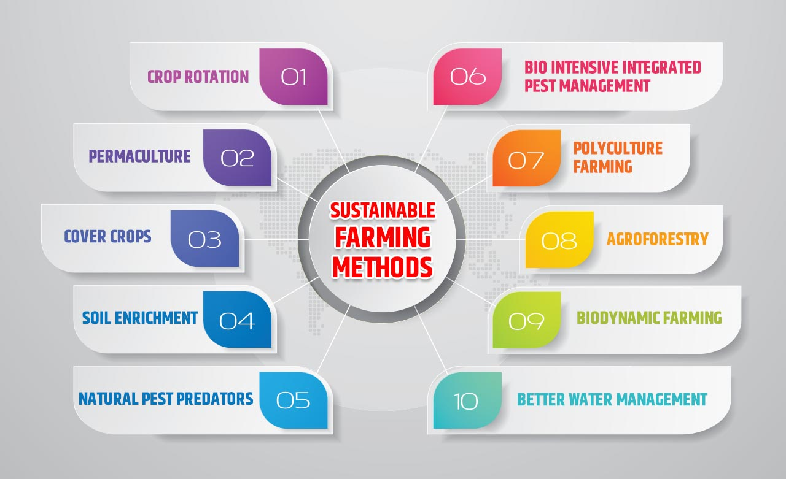

Advancing Towards Eco-Friendly Agriculture
The agricultural sector is at a crossroads, with sustainability becoming a central focus of modern farming practices. As we look towards the future, several trends and innovations are set to shape the future of sustainable farming. Here’s an overview of what’s on the horizon:
1. Regenerative Agriculture
Regenerative agriculture goes beyond sustainable practices by actively improving soil health and biodiversity. Techniques such as cover cropping, reduced tillage, and holistic grazing are being adopted to restore ecosystems and enhance farm resilience.
2. Agroforestry
Agroforestry integrates trees and shrubs into crop and livestock systems, creating a more diverse and resilient farming environment. This practice not only boosts productivity but also contributes to carbon sequestration and habitat conservation.
3. Precision Farming
Precision farming leverages technology like drones, GPS, and soil sensors to optimize agricultural inputs. By applying resources more efficiently, farmers can reduce waste and minimize environmental impact while boosting yields.
4. Vertical Farming
Vertical farming continues to gain traction as a method to produce food in urban areas. This method allows for high-density food production with reduced land use, conserving resources and minimizing the carbon footprint associated with transportation.
5. Smart Irrigation
Smart irrigation systems use real-time data and weather forecasts to manage water usage more effectively. This innovation helps conserve water, reduce costs, and ensure crops receive the optimal amount of hydration.
The future of sustainable farming is promising, with ongoing advancements aimed at creating a more efficient, eco-friendly agricultural system. Embracing these practices will be key to ensuring food security while preserving our planet for future generations.